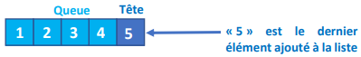
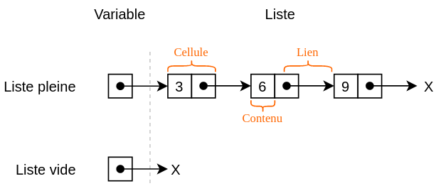
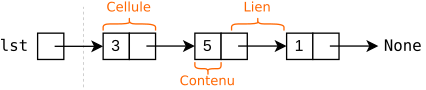
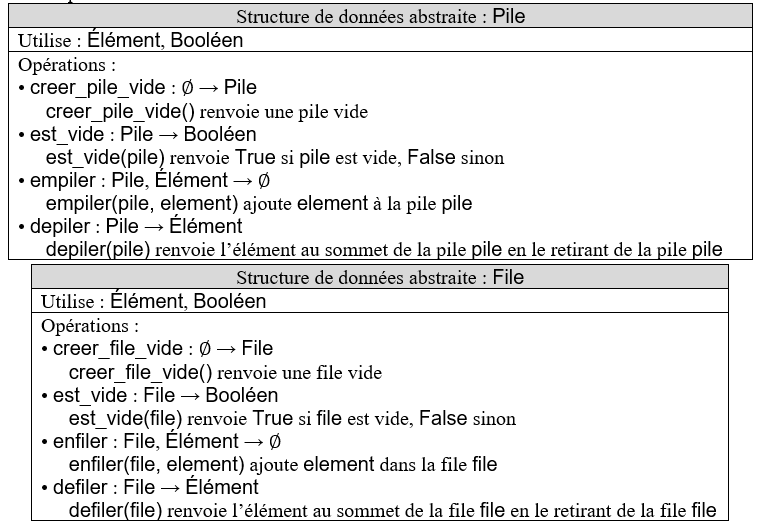
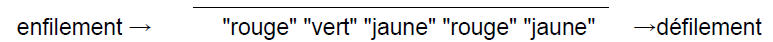
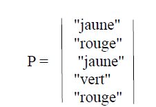

Thème 3 : Structures linéaires¶
Objectif
Dans ce chapitre, nous allons étudier différentes structures de données linéaires.
Nous chercherons notamment à comprendre :
- ce qu'est une structure de données abstraite ;
- comment fonctionne une liste ;
- comment implémenter une liste chaînée ;
- comment fonctionne une file et le principe FIFO ;
- comment fonctionne une pile et le principe LIFO ;
- comment implémenter ces structures à l'aide de classes Python ;
- comment utiliser une pile pour implémenter une file et inversement.
À la fin de ce chapitre, vous devrez être capables de choisir une structure de données adaptée à un problème, de simuler les opérations qui lui sont appliquées et d'implémenter les opérations fondamentales d'une liste chaînée, d'une pile et d'une file en Python.
1. Les structures linéaires¶
Structure linéaire
Certains algorithmes manipulent des données stockées dans des structures diverses.
Nous allons voir trois types de structures dites linéaires : les listes, les files et les piles.
Ces structures sont appelées linéaires car il existe un moyen, à partir de n'importe quel élément qui n'est pas le dernier, d'accéder à un « successeur ».
Dans une structure linéaire, les éléments sont organisés selon un ordre. En revanche, les opérations autorisées pour accéder aux éléments, en ajouter ou en retirer dépendent de la structure considérée. Une liste, une file et une pile ne permettent donc pas nécessairement les mêmes manipulations.
Structure de données abstraite
Une structure de données abstraite (ou SDA) est une représentation d'un ensemble de données ainsi que les opérations qui s'y appliquent.
La structure est dite abstraite car on n'a pas besoin de savoir comment les données sont représentées, ou comment les opérations sont implémentées.
Exemple :
class Point:
def __init__(self):
"""
initialisation non précisée, on ne connait pas les détails de stockage
"""
...
def translate(self, x, y):
"""
on ne connait pas l'implémentation de l'opération, mais juste sa spécification
rôle : déplace le point de x en abscisse et y en ordonnée
@param x : (int)
@param y : (int)
@return : None
"""
...
La structure Point représentée plus haut est une SDA, car on ne sait pas comment sont représentées les données (tuple, tableau, dictionnaire, ...) et on ne sait pas comment les opérations sont implémentées.
SDA et implémentation
Il faut distinguer deux notions :
- La structure de données abstraite (SDA) décrit les données manipulées et les opérations disponibles, sans imposer la manière dont elles sont stockées.
- L'implémentation décrit la manière concrète dont les données sont représentées en mémoire et dont les opérations sont réalisées.
Une même SDA peut donc posséder plusieurs implémentations. Par exemple, une pile peut être implémentée à l'aide d'un tableau Python ou d'une liste chaînée, tout en conservant les mêmes opérations et le même comportement.!!! tip "SDA et implémentation"
2. Les listes¶
Liste
Une liste est une structure abstraite de données permettant de regrouper des données sous une forme séquentielle.
Elle est constituée d'éléments d'un même type, chacun possédant un rang.
Une liste est évolutive : on peut ajouter ou supprimer n'importe lequel de ses éléments.
Une liste L est composée de deux parties :
- sa tête qui correspond au dernier élément ajouté à la liste ;
- sa queue qui correspond au reste de la liste.

Le langage de programmation Lisp, conçu par John McCarthy en 1958, est l'un des premiers langages à avoir fait des listes une structure de données fondamentale. Son nom vient de LISt Processing (« traitement de listes »).
Voici les opérations pouvant être effectuées sur une liste chaînée :
| Actions | Instruction |
|---|---|
Créer une liste chaînée L vide |
L = vide() |
Tester si la liste chaînée L est vide |
estVide(L) |
Ajouter un élément x en tête de la liste chaînée L |
ajouteEnTete(x,L) |
Supprimer le premier élément de L et renvoyer sa valeur |
supprEnTete(L) |
Compter le nombre d'éléments de L |
compte(L) |
Construire une nouvelle liste chaînée à partir d'un élément x et d'une liste L |
L1 = cons(x,L) |
Exercice 1 — Ba-liste-ique
1. Voici une série d'instructions. Les instructions ci-dessous s'enchaînent. Expliquez ce qui se passe à chacune des étapes :
L = vide()
estVide(L)
ajouteEnTete(3,L)
estVide(L)
ajouteEnTete(5,L)
ajouteEnTete(8,L)
t = supprEnTete(L)
L1 = vide()
L2 = cons(8, cons(5, cons(3, L1)))
2. Voici une série d'instructions. Les instructions ci-dessous s'enchaînent. Expliquez ce qui se passe à chacune des étapes :
3. Les listes chaînées¶
Liste chaînée
Lorsque l'implémentation de la liste fait apparaître une chaîne de valeurs, chacune pointant vers la suivante, on dit que la liste est une liste chaînée. Chaque élément est donc stocké dans un bloc mémoire avec une deuxième information : l'adresse de l'élément suivant. On parle de maillon, cellule ou encore node pour désigner ces blocs.

Interface : on dispose, ou souhaite disposer, sur une liste chaînée des méthodes/primitives suivantes :
- construire une liste vide, souvent nommée
nil; - déterminer si la liste est vide (
est_vide,is_empty) ; - insérer un élément en tête de liste (
insert) ; - récupérer l'élément en tête de liste (
tete,head) ; - récupérer la liste privée de son premier élément, appelée la queue (
queue,tail).
Ces opérations doivent être réalisées en temps constant.
Activité 1 — Implémentation
1. Écrire une classe Cellule, possédant deux attributs : contenu (la valeur de la cellule) et suivante (une instance de la classe Cellule).
On pourra alors créer une liste chaînée de la façon suivante :
La liste construite sera de la forme suivante :
2. Écrire les lignes de code permettant d'afficher la valeur de toutes les cellules.
Exercice 2 — Ecris liste oire
On dispose de l'interface offrant les fonctionnalités suivantes :
ListeC(): crée une liste vide ;est_vide(): indique si la liste est vide ;ajoute_tete(): insère un élément en tête de liste ;renvoie_tete(): renvoie la valeur de l'élément en tête de liste et le supprime de la liste.
1. On considère l'enchaînement d'opérations ci-dessous. Écrire à chaque étape l'état de la liste lst et la valeur éventuellement renvoyée.
Activité 2 — Classe à Dallas
1. Ajouter une méthode __str__ à votre classe Cellule. Elle affichera le contenu de la cellule et celui des suivantes si elles existent.
Elle renverra donc :
pour la liste lst créée précédemment.
2. Compléter la classe ListeC suivante :
class ListeC:
def __init__(self):
self.tete = None # Liste vide
def ajoute_tete(self, valeur):
'''
Créer une nouvelle cellule contenant la valeur et l'ajouter en tête.
'''
...
def est_vide(self):
'''
Indiquer si la liste est vide ou non.
@return : (bool) True si vide, False sinon
'''
...
def renvoie_tete(self):
'''
Renvoyer le contenu de la tête de la liste et la retirer
'''
...
def __str__(self): # affichage de la liste
c = self
l = []
while not c.est_vide():
l.append(str(c.renvoie_tete()))
l.reverse()
for v in l:
self.ajoute_tete(v)
l.reverse()
return ' -> '.join(l)
3. Écrire la suite d'instructions permettant de vérifier votre réponse à l'exercice 2.
4. Les files¶
File
Une file est une structure linéaire basée sur le principe du First In First Out (premier arrivé, premier sorti en français), ou plus simplement FIFO.
On ne peut donc accéder qu'au premier élément, appelé tête, et n'ajouter qu'en fin de file, appelée queue.

La SDA de la file serait donc :
initpour créer une file vide ;enfilerpour ajouter un élément à la fin de la file ;défilerpour retirer et récupérer le premier élément ;est_videpour savoir si la file est vide.
D'autres opérations peuvent être données au cas par cas.
Exemple :
À la fin de la manipulation, la file F contient les éléments 2, 3 et 4, et nb vaut alors 1.
Exercice 3 — File dans ta chambre
Dans les différentes questions, vous considérez pouvoir utiliser les opérations de la SDA donnée ci-dessous.
class File:
def __init__(self):
...
def enfiler(self, x):
...
def defiler(self):
...
def est_vide(self):
...
1. Écrire une suite d'instructions permettant de créer une instance de la classe File affectée à la variable ma_file contenant les éléments 1, 2 et 3 insérés dans cet ordre.
2. Donner l'affichage obtenu après les appels suivants.
# On considère ma_deuxieme_file bien initialisée comme une file vide
ma_deuxieme_file.enfiler(5)
ma_deuxieme_file.enfiler(4)
ma_deuxieme_file.enfiler(3)
ma_deuxieme_file.defiler()
ma_deuxieme_file.defiler()
ma_deuxieme_file.enfiler(4)
ma_deuxieme_file.enfiler(ma_deuxieme_file.defiler())
3. Donner une implémentation de l'opération taille renvoyant le nombre d'éléments d'une file en utilisant seulement les éléments Python de base et les opérations de la SDA données précédemment.
4. Donner une implémentation de l'opération inverser permettant d'inverser les éléments de la file.
La file d'ordre 1, 2 et 3 deviendra donc la file d'ordre 3, 2 et 1 après exécution de l'opération inverser.
Activité 3 — File un mauvais coton
1. Implémenter une SDA possible de cette structure de données en utilisant les tableaux.
Plus précisément, compléter les opérations init, enfiler, defiler et est_vide en stockant les données dans des tableaux.
2. Écrire un bref jeu de test permettant de valider votre implémentation.
5. Les piles¶
Pile
Une pile est une structure linéaire basée sur le principe du Last In First Out (dernier arrivé, premier sorti en français), ou plus simplement LIFO.
On ne peut donc accéder qu'au dernier élément ajouté, appelé sommet, et n'ajouter qu'au-dessus du sommet.

La SDA de la pile serait donc :
initpour créer une pile vide ;empilerpour ajouter un élément au-dessus de la pile ;dépilerpour retirer et récupérer le sommet ;est_videpour savoir si la pile est vide.
D'autres opérations peuvent être données au cas par cas.
Exemple :
À la fin de la manipulation, la pile P contient les éléments 4, 2 et 1, avec 4 comme sommet, et nb vaut 3.
Exercice 4 — Pile à l'heure
Dans les différentes questions, vous considérez pouvoir utiliser les opérations de la SDA donnée ci-dessous.
class Pile:
def __init__(self):
...
def empiler(self, x):
...
def depiler(self):
...
def est_vide(self):
...
1. Écrire une suite d'instructions permettant de créer une instance de la classe Pile affectée à la variable ma_pile contenant les éléments 3, 2 et 1 insérés dans cet ordre.
2. Donner l'affichage obtenu après les appels suivants.
# On considère ma_deuxieme_pile bien initialisée comme une pile vide
ma_deuxieme_pile.empiler(20)
ma_deuxieme_pile.empiler(7)
ma_deuxieme_pile.empiler(68)
ma_deuxieme_pile.depiler()
ma_deuxieme_pile.depiler()
ma_deuxieme_pile.empiler(45)
ma_deuxieme_pile.empiler(ma_deuxieme_pile.depiler())
3. Donner une implémentation de l'opération taille renvoyant le nombre d'éléments d'une pile en utilisant seulement les éléments Python de base et les opérations de la SDA données précédemment.
4. Donner une implémentation de l'opération inverser permettant d'inverser les éléments de la pile.
La pile d'ordre 1, 2 et 3 (avec 1 comme sommet) deviendra donc la pile d'ordre 3, 2 et 1 (avec 3 comme sommet) après exécution de l'opération inverser.
Activité 4 — Pile Poil
1. Implémenter une SDA possible de cette structure de données en utilisant les tableaux.
Plus précisément, compléter les opérations init, empiler, depiler et est_vide en stockant les données dans des tableaux.
2. Écrire un bref jeu de test permettant de valider votre implémentation.
Activité 5 — Dupile et Dufile
Vous possédez une SDA de la file semblable à celle présentée dans l'exercice 3.
1. Grâce à la SDA de la file, implémenter une classe Pile en utilisant les files.
Vous possédez une SDA de la pile semblable à celle présentée dans l'exercice 4.
2. Grâce à la SDA de la pile, implémenter une classe File en utilisant les piles.
Exercice 5 — Midi Pile
On crée une classe Pile qui modélise la structure d'une pile d'entiers.
Le constructeur de la classe initialise une pile vide.
La définition de cette classe sans l'implémentation de ses méthodes est donnée ci-dessous.
class Pile:
def __init__(self):
"""Initialise la pile comme une pile vide."""
def est_vide(self):
"""Renvoie True si la liste est vide, False sinon."""
def empiler(self, e):
"""Ajoute l'élément e sur le sommet de la pile, ne renvoie rien."""
def depiler(self):
"""Retire l'élément au sommet de la pile et le renvoie."""
def nb_elements(self):
"""Renvoie le nombre d'éléments de la pile."""
def afficher():
"""Affiche de gauche à droite les éléments de la pile, du fond
de la pile vers son sommet. Le sommet est alors l'élément
affiché le plus à droite. Les éléments sont séparés par une
virgule. Si la pile est vide la méthode affiche "pile vide"."""
Attention !
Seules les méthodes de la classe ci-dessus doivent être utilisées pour manipuler les objets Pile.
1.
a. Écrire une suite d'instructions permettant de créer une instance de la classe Pile affectée à une variable pile1 contenant les éléments 7, 5 et 2 insérés dans cet ordre.
Ainsi, à l'issue de ces instructions, l'instruction pile1.afficher() produit l'affichage :
b. Donner l'affichage produit après l'exécution des instructions suivantes.
2. On donne la fonction mystere suivante.
def mystere(pile, element) :
pile2 = Pile()
nb_elements = pile.nb_elements()
for i in range(nb_elements) :
elem = pile.depiler()
pile2.empiler(elem)
if elem == element :
return pile2
return pile2
a. Dans chacun des quatre cas suivants, quel est l'affichage obtenu dans la console ?
a.
b. c. d.b. Expliquer ce que permet d'obtenir la fonction mystere.
3. Écrire une fonction etendre(pile1, pile2) qui prend en arguments deux objets Pile appelés pile1 et pile2 et qui modifie pile1 en lui ajoutant les éléments de pile2 rangés dans l'ordre inverse.
Cette fonction ne renvoie rien.
On donne ci-dessous les résultats attendus pour certaines instructions.
>>>pile1.afficher()
7, 5, 2, 3
>>>pile2.afficher()
1, 3, 4
>>>etendre(pile1, pile2)
>>>pile1.afficher()
7, 5, 2, 3, 4, 3, 1
>>>pile2.est_vide()
True
4. Écrire une fonction supprime_toutes_occurences(pile, element) qui prend en arguments un objet Pile appelé pile et un élément element et supprime tous les éléments element de pile.
On donne ci-dessous les résultats attendus pour certaines instructions.
Exercice 6 — File du rasoir
Un supermarché met en place un système de passage automatique en caisse.
Un client scanne les articles à l'aide d'un scanner de code-barres au fur et à mesure qu'il les ajoute dans son panier.
Les articles s'enregistrent alors dans une structure de données.
La structure de données utilisée est une file définie par la classe Panier, avec les primitives habituelles sur la structure de file.
Pour faciliter la lecture, le code de la classe Panier n'est pas écrit.
class Panier:
def __init__(self):
"""Initialise la file comme une file vide."""
def est_vide(self):
"""Renvoie True si la file est vide, False sinon."""
def enfiler(self, e):
"""Ajoute l'élément e en dernière position de la file, ne renvoie rien."""
def defiler(self):
"""Retire le premier élément de la file et le renvoie."""
Le panier d'un client sera représenté par une file contenant les articles scannés.
Les articles sont représentés par des tuples (code_barre, designation, prix, horaire_scan) où :
code_barreest un nombre entier identifiant l'article ;designationest une chaîne de caractères qui pourra être affichée sur le ticket de caisse ;prixest un nombre décimal donnant le prix d'une unité de cet article ;horaire_scanest un nombre entier de secondes permettant de connaître l'heure où l'article a été scanné.
1. On souhaite ajouter un article dont le tuple est le suivant :
Écrire le code utilisant une des quatre méthodes ci-dessus permettant d'ajouter l'article à l'objet de classe Panier appelé panier1.
2. On souhaite définir une méthode remplir(panier_temp) dans la classe Panier permettant de remplir la file avec tout le contenu d'un autre panier_temp qui est un objet de type Panier.
Recopier et compléter le code de la méthode remplir en remplaçant chaque ... par la primitive de file qui convient.
def remplir(self, panier_temp):
while not panier_temp. ......... :
article = panier_temp. ...........
self. ...........(article)
3. Pour que le client puisse connaître à tout moment le montant de son panier, on souhaite ajouter une méthode prix_total() à la classe Panier qui renvoie la somme des prix de tous les articles présents dans le panier.
Écrire le code de la méthode prix_total.
Attention : après l'appel de cette méthode, le panier devra toujours contenir ses articles.
4. Le magasin souhaite connaître pour chaque client la durée des achats.
Cette durée sera obtenue en faisant la différence entre le champ horaire_scan du dernier article scanné et le champ horaire_scan du premier article scanné dans le panier du client.
Un panier vide renverra une durée égale à zéro.
On pourra accepter que le panier soit vide après l'appel de cette méthode.
Écrire une méthode duree_courses de la classe Panier qui renvoie cette durée.
Exercice 7 — File du rasoir
Les interfaces des structures de données abstraites Pile et File sont proposées ci-dessous.
On utilisera uniquement les fonctions ci-dessous :

1.
a. On considère la file F suivante :

Quel sera le contenu de la pile P et de la file F après l'exécution du programme Python suivant ?
b. Créer une fonction taille_file qui prend en paramètre une file F et qui renvoie le nombre d'éléments qu'elle contient.
Après appel de cette fonction, la file F doit avoir retrouvé son état d'origine.
2. Écrire une fonction former_pile qui prend en paramètre une file F et qui renvoie une pile P contenant les mêmes éléments que la file.
Le premier élément sorti de la file devra se trouver au sommet de la pile ; le deuxième élément sorti de la file devra se trouver juste en-dessous du sommet, etc.
Exemple : si
alors l'appel former_pile(F) va renvoyer la pile P ci-dessous :

3. Écrire une fonction nb_elements qui prend en paramètres une file F et un élément elt et qui renvoie le nombre de fois où elt est présent dans la file F.
Après appel de cette fonction, la file F doit avoir retrouvé son état d'origine.
4. Écrire une fonction verifier_contenu qui prend en paramètres une file F et trois entiers : nb_rouge, nb_vert, nb_jaune.
Cette fonction renvoie le booléen True si "rouge" apparaît au plus nb_rouge fois dans la file F, "vert" apparaît au plus nb_vert fois dans la file F et "jaune" apparaît au plus nb_jaune fois dans la file F.
Elle renvoie False sinon.
On pourra utiliser les fonctions précédentes.